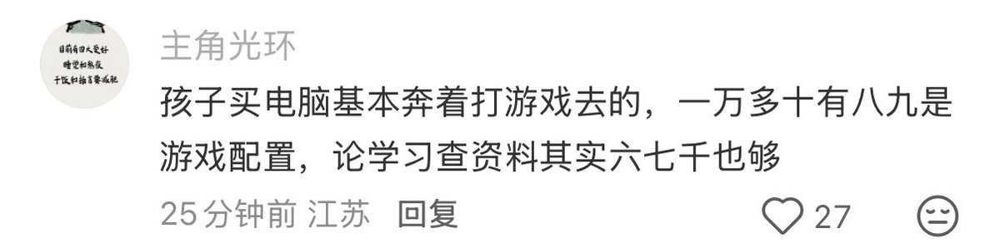
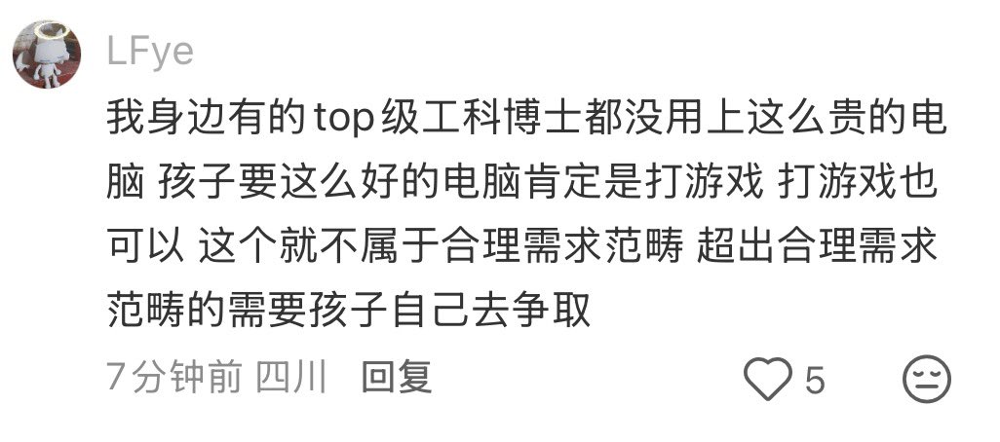
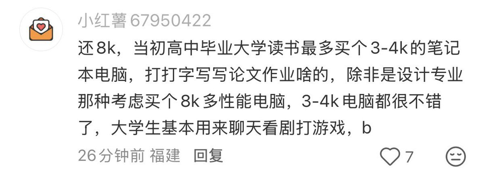

初中高中这么压抑的六年都过了，买台电脑上大学放松放松呗，为啥不能用来打游戏呢。图里一些家长没钱就说没钱，买不起就说买不起就好了，不用找一堆借口，你愿意出就给孩子出多少钱，他有能力自己补上，没能力就预算范围内自己挑一个，正好磨练磨练工作和信息收集能力，自己赚钱也不容易上大学乱花钱




其实我很感动的一点是
我爹至少懂一些计算机
我高中毕业的时候说可能会用显卡做一些计算之类的东西 然后他就力排家里众议让我买了个显卡还不错的游戏本
在那个笔记本上我学会了基本的ML也学会了CNN RNN等基础DL 还玩了BERT YOLO 最终把我推向了现在的路
而且那个笔记本从开始到退役一点也没拖我后腿 https://t.co/CsZvPqDefM
我爹至少懂一些计算机
我高中毕业的时候说可能会用显卡做一些计算之类的东西 然后他就力排家里众议让我买了个显卡还不错的游戏本
在那个笔记本上我学会了基本的ML也学会了CNN RNN等基础DL 还玩了BERT YOLO 最终把我推向了现在的路
而且那个笔记本从开始到退役一点也没拖我后腿 https://t.co/CsZvPqDefM